生肖
Chinese Zodiac


Shēngxiào
The Shēngxiào literally “birth likeness”, is a scheme and systematic plan of future action that relates each year to an animal and its reputed attributes according to a 12-year mathematical cycle and it remains popular in several East Asian countries including China, Vietnam, Korea, Japan, and Thailand.
Dragon


Goat


Rooster
 

Ox